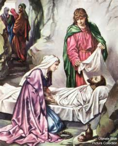

The Seven Dolors of Mary
“Behold, your Mother” (John 19:27)
Sorrowful and Immaculate Heart of Mary,
Pray for us who have recourse to thee.
The Seven Promises of Mary
These are the promises that God grants to those who honor The Blessed Virgin Mother daily by saying seven Hail Mary's while contemplating her tears and sorrows during her life. This devotion was passed on to us by St. Bridget.
- I will grant Peace to their families.
- They will be enlightened about the Divine Mysteries.
- I will console them in their pains and I will accompany them in their work."
- I will give them as much as they ask for as long as it does not oppose the adorable will of my Divine Son or the sanctification of their souls.
- I will defend them in their spiritual battles with the infernal enemy and I will protect them at every instant of their lives.
- I will visibly help them at the moment of their death, they will see the face of their mother.
- I have obtained (This Grace) from my Divine Son, that those who propagate this devotion to my tears and dolors, will be taken directly from this earthly life to eternal happiness since all their sins will be forgiven and my Son will be their eternal consolation and joy.
“The time is now ripe. I wish mankind to turn to The Sorrowful and Immaculate Heart of My Mother. Let this prayer be uttered by every soul.... Let this prayer dictated by My Love as a supreme succor be approved and indulgenced, no longer partially and for a small portion of My flock, but for the whole universe, so that it may spread as a refreshing and purifying balm of reparation that will appease My anger.”
The Seven Dolors of Mary
1. The Prophecy of Simeon
2. The Flight into Egypt

3. The Loss of the Child Jesus
4. The Meeting of Jesus and Mary on the Way of the Cross
5. The Crucifixion

6. Jesus' body Struck by a Lance, Taken Down from the Cross
7. The Burial of Jesus
The Prayers Honoring the Seven Dolors of Mary (Approved by Pope Pius VII in 1815)
V. O God, come to my assistance;
R. O Lord, make haste to help me.
V. Glory be to the Father, etc.
R. As it was in the beginning, etc.
- I grieve for you, O Mary most sorrowful, in affliction of your tender heart at the prophecy of the holy and aged Simeon.
O dearest Mother, by your heart so afflicted, implore for me the virtue of humility and the Gift of the holy Fear of God.
Hail Mary... - I grieve for you, O Mary most sorrowful, in the anguish of your most affectionate heart during the flight into Egypt and your sojourn there.
O dearest Mother, by your anxious heart so troubled, obtain for me the virtue of generosity, especially toward the poor, and the Gift of Piety.
Hail Mary... - I grieve for you, O Mary most sorrowful, in those anxieties which tried your troubled heart at the loss of your beloved Child Jesus.
O dearest Mother, by your exeedingly troubled heart implore for me the virtue of chastity and the Gift of Knowledge.
Hail Mary... - I grieve for you, O Mary most sorrowful, on account of the horror with which your mother-heart was stricken when meeting Jesus bearing the Cross.
O dearest Mother, by your exeedingly oppressed heart implore for me the virtue of patience and the Gift of Fortitude.
Hail Mary... - I grieve for you, O Mary most sorrowful, on account of that martyrdom which tortured your generous heart at the death-agony of Jesus.
O dearest Mother, through this thy martyred heart, implore for me the virtue of temperance and the Gift of Counsel.
Hail Mary... - I grieve for you, O Mary most sorrowful, in the wounding of your tender heart, by the thrust of the lance that opened the side of Jesus
and pierced His most adorable Heart.
O dearest Mother, by this vicarious transfixion of thy own heart, implore for me the virtue of brotherly love and the Gift of Understanding.
Hail Mary... - I grieve for you, O Mary most sorrowful, on account of that agony which racked your most loving heart at the burial of Jesus.
O dearest Mother, through this extreme torment that filled thy burdened heart, obtain for me the virtue of zeal and the Gift of Wisdom.
Hail Mary...
V. Sorrowful and Immaculate Heart of Mary, pray for us!
R. That we may be made worthy of the promises of Christ.
Let Us Pray:
Let intercession be made for us, we beseech You, O Lord Jesus Christ, now and at the hour of our death, before the throne of Your mercy,
by the Blessed Virgin Mary, Your Mother, whose most holy soul was pierced by a sword of sorrow in the hour of Your bitter Passion.
Through You, O Jesus Christ, Saviour of the world, who with the Father and the Holy Ghost lives and reigns world without end. Amen.